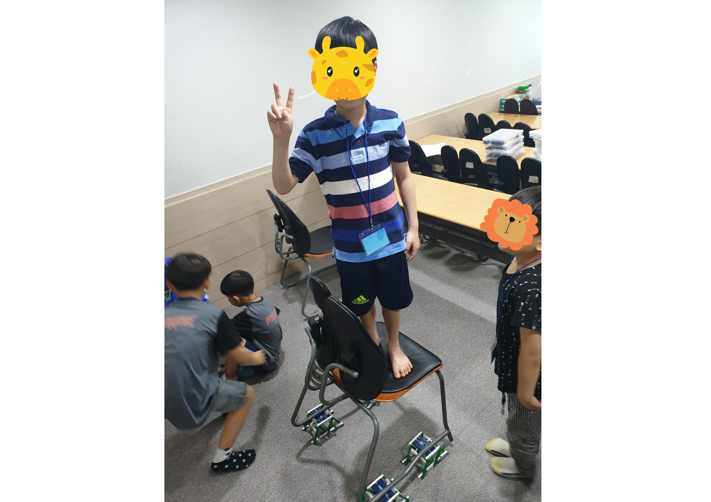
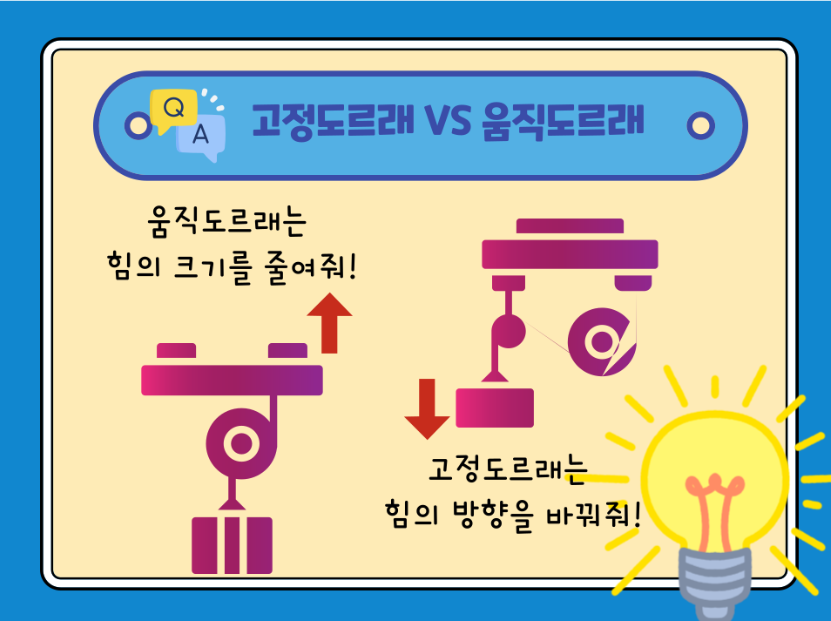
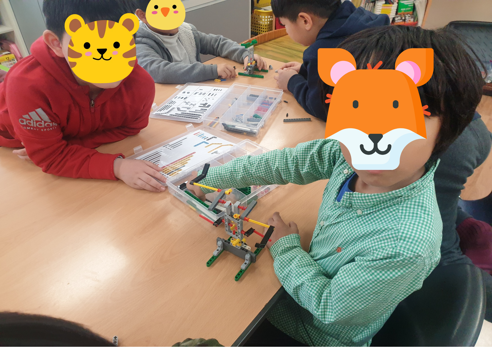
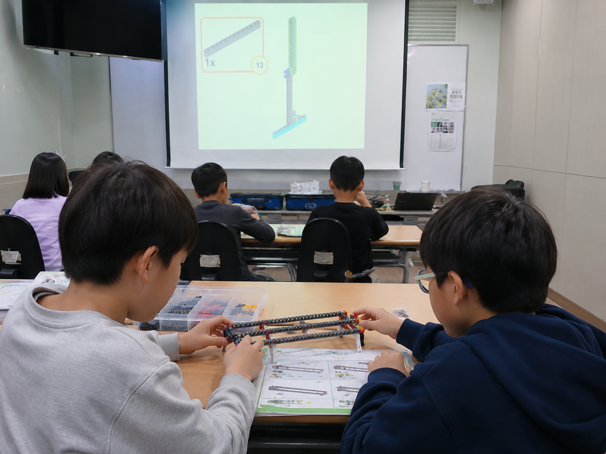
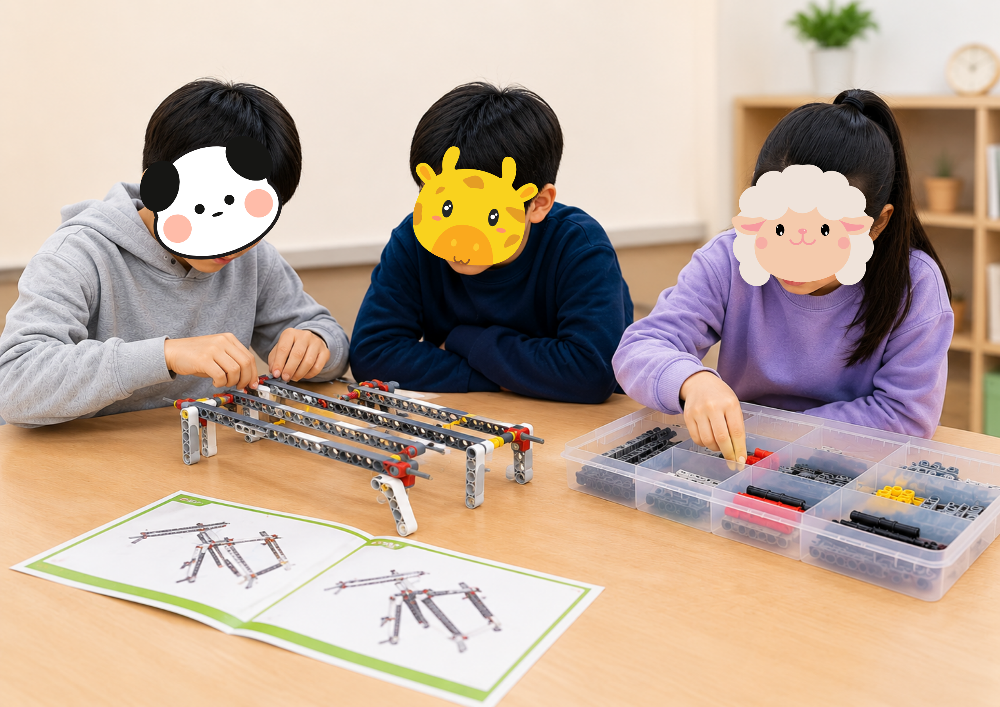
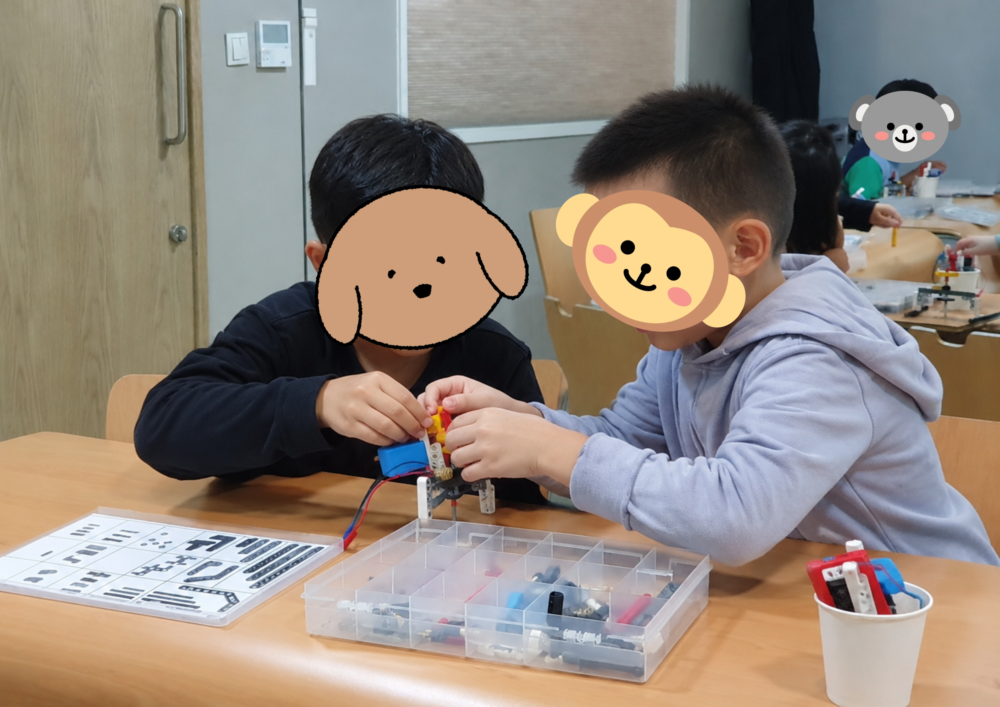
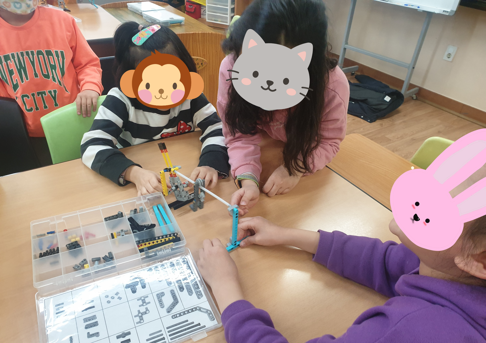

NB_Class/Main.png'">
NB_Class/Main.png'">

NB_Class/main2.png'">NB_Class/Main.png'">

NB_Class/main2.png'">
다양한 친구들과의 관계 속에서, 아이들은 자기조절력을 입체적으로 경험하게 됩니다.
늘봄 블록과학교실은 이 교실이라는 공간의 가능성을 최대한 살린 프로그램입니다. 단순한 과학적 탐구와 창의 활동에 머무는 것이 아니라, 친구와 함께 협동하여 만들어가는 과정 속에서 아이들은 자연스럽게 사회성과 자기조절력을 탄탄하게 키워나갑니다.
Neulbom Block Science Class Flow
교과 원리를 직관적으로 이해하는 과학 활동과 관계와 조율을 배우는 정서·사회성 활동이 입체적으로 결합된 3단계 프로세스입니다.
옆으로 넘겨서 보세요
교과서 속 어려운 과학 용어가 아이들 눈높이에 맞춘 재미있는 원리장치와 실험도구로 변환됩니다. 신기한 현상을 관찰하며 호기심과 기대감으로 블록 조립을 시작합니다.
오늘 만들 장치에 대해 서로 어떤 부분이 궁금한지 이야기를 나누며 활동을 시작합니다. 친구의 생각을 듣고 내 생각을 표현하는 첫 소통의 시간입니다.

NB_Class/Intro.png'\">
NB_Class/Intro2.png'\">평면의 2D 도면을 판독하여 3D 정밀 입체 블록 장치로 직접 구현합니다. 기어와 축이 정교하게 맞물려 장치가 실제로 움직이는 순간, 과학 원리를 손끝의 직관으로 이해합니다.
하나의 재료를 함께 사용하기 때문에, 누가 먼저 할지 순서를 정하고 역할을 번갈아가며 조립합니다. 기다림, 양보, 협력의 경험이 자연스럽게 쌓이는 시간입니다.

NB_Class/Process.png'\">
NB_Class/Process2.png'\">스스로 장치를 구동해보며 "이렇게 다르게도 해볼까?"라는 능동적 변형 동기가 살아납니다. 습득한 원리를 활용해 주도적으로 발표하며 자신감과 책임감을 가슴에 새깁니다.
"더 만들고 싶어!"라는 마음이 들 때, 친구에게 이야기하고 동의를 구하거나 합의를 이끌어내는 경험을 합니다. 수업이 끝나면 함께 교구를 정리하며 공동체 의식과 생활 질서를 기릅니다.

NB_Class/Ending.png'\">
NB_Class/Ending2.png'\">학기별로 체계적으로 구성된 12차시의 흥미진진한 블럭 과학/동화 여행을 만나보세요!
| 차시 | 💡 과학체험 내용 | 🧱 블럭놀이 주제 |
|---|---|---|
| 1차시 | 무게중심 | 밸런스카 |
| 2차시 | 도르레 | 컨베이어벨트 |
| 3차시 | 순간적인 힘, 압력 | 펑로켓 |
| 4차시 | 압력의 차이 | 주사기 로봇손 |
| 5차시 | 풀리와 벨트 | 발달린 바퀴 |
| 6차시 | 움직 도르레 | 구조크레인 |
| 7차시 | 무게중심 | 케이블카 |
| 8차시 | 작용, 반작용 | 금메달 사격총 |
| 9차시 | 포물선 | 종이컵 농구 |
| 10차시 | 진동원리 | 댄서 돼지 |
| 11차시 | 고정구조(삼각형), 움직구조(사각형) | 트러스트 다리 |
| 12차시 | 지레 | 로봇손 |
| 차시 | 💡 과학체험 내용 | 🧱 블럭놀이 주제 |
|---|---|---|
| 1차시 | 관성 | 왔다갔다 짚라인 |
| 2차시 | 회전, 착시현상 | 그림을 움직이는 기계 |
| 3차시 | 지레 | 움직이는 날개 |
| 4차시 | 회전, 착시현상 | 빙글빙글 쌩쌩 |
| 5차시 | 포물선, 탄성력 | 석궁 |
| 6차시 | 위치에너지, 각도 | 핀볼 |
| 7차시 | 반응속도, 탄성력 | 펀치건 |
| 8차시 | 마찰력, 회전 | 바이킹 |
| 9차시 | 내 맘대로 기린 | 기린 각도 체험 |
| 10차시 | 반짝반짝 하늘별자리 | 하늘별자리 만들기 |
| 11차시 | 뱅글뱅글 불빛놀이 | 닥터스트레인져 |
| 12차시 | 무지개만들기 | 무지개만들기 실험 |
| 차시 | 💡 과학체험 내용 | 🧱 블럭놀이 주제 |
|---|---|---|
| 1차시 | 회전, 착시 | 고속회전 |
| 2차시 | 위치에너지, 가속도 | 위치 레이싱 |
| 3차시 | 지레, 악력 | 인형뽑기의 함정 |
| 4차시 | 지레, 지렛대, 포물선 | 중세시대의 탱크 투석기 |
| 5차시 | 착시, 회전 | 변신장치 |
| 6차시 | 색의혼합, 고속회전 | 단풍회전판 |
| 7차시 | 압력 | 골판지 인쇄기 |
| 8차시 | 풍력 | 풍력모빌 |
| 9차시 | 탄성력, 마찰력 | 레이싱 발사대 |
| 10차시 | 지레 | 우산 |
| 11차시 | 회전, 탄성력, 풍력 | 풍력카 |
| 12차시 | 지레, 왕복 | 와이퍼 |
| 차시 | 💡 과학체험 내용 | 🧱 블럭놀이 주제 |
|---|---|---|
| 1차시 | 탄성력1 | 항공모함 |
| 2차시 | 무게중심 | 오뚜기카 |
| 3차시 | 입사각과 반사각 | 테이블 테니스 |
| 4차시 | 관성과 톱니바퀴 | 시간아 멈춰라 |
| 5차시 | 무게중심 | 거미 |
| 6차시 | 마찰력 | 회전카 |
| 7차시 | 진자운동 | 똑딱똑딱 시계 |
| 8차시 | 균형 | 매직카펫 |
| 9차시 | 척력 | 버스 |
| 10차시 | 인력, 척력 | 자석 공중 그네 |
| 11차시 | 반복과 톱니바퀴 | 드림캐쳐 |
| 12차시 | 자력과 도르레 | 자석낚시 |
완성된 장치를 친구와 함께 작동하는 아이의 눈이 가장 반짝이며 자기효용감과 자신감 그리고 친구와 유대감이 가장 크게 자라납니다.
늘봄 블록과학교실의 모든 수업은 이 성취의 순간과 '우리'를 향해 체계적으로 설계되어 있습니다.